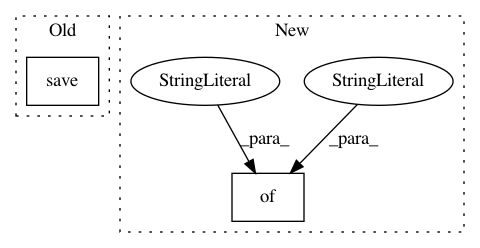

6ac71c8dea5f7bb18e6f5ca040ad9313427b2d9b,app/grandchallenge/reader_studies/signals.py,,assign_score,#,46
Before Change
images__in=pk_set,
):
answer.calculate_score(instance.answer)
answer.save()
else:
ground_truth = Answer.objects.filter(
question=instance.question,
is_ground_truth=True,
After Change
if action != "post_add":
return
add_scores.apply_async(
kwargs={
"instance_pk": str(instance.pk),
"pk_set": list(map(str, pk_set)),
}
)
In pattern: SUPERPATTERN
Frequency: 3
Non-data size: 2
Instances
Project Name: comic/grand-challenge.org
Commit Name: 6ac71c8dea5f7bb18e6f5ca040ad9313427b2d9b
Time: 2020-01-28
Author: 57257130+MikeOverkamp-diag@users.noreply.github.com
File Name: app/grandchallenge/reader_studies/signals.py
Class Name:
Method Name: assign_score
Project Name: ncullen93/torchsample
Commit Name: 26fbd01602d127b6ddda2f4834924d6474d96f58
Time: 2017-10-08
Author: antorsae@gmail.com
File Name: torchsample/callbacks.py
Class Name: ModelCheckpoint
Method Name: save_checkpoint
Project Name: IDSIA/sacred
Commit Name: 4b4b12ecbed13346cc3d9725bc146bf915f49497
Time: 2016-11-03
Author: chris.j.musselle@gmail.com
File Name: sacred/observers/tinydb.py
Class Name: TinyDbObserver
Method Name: artifact_event